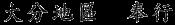

Chương 11

Người đàn ông nhỏ thó với cặp mắt đen sắc lẹm đang trừng trừng nhìn nó. Người này sở hữu cái mũi tẹt - do đã từng gãy nhiều lần trong lúc chiến đấu - đôi môi mỏng không bao giờ mỉm cười, bộ ria mép màu muối tiêu. Dù nhỏ bé, lại lớn tuổi, nhưng từng thớ thịt trên người ông ta đều cứng cáp tựa đá hoa cương.
“Thầy Kyuzo!” Jack thốt lên trong tâm trạng vừa sửng sốt vừa mừng vì được gặp lại vị võ sư thể thuật năm xưa.
Nhưng thầy Kyuzo không hề thả tay, khuôn mặt ông cũng không hề để lộ bất kì biểu cảm gì.
“Là con, Jack đây!”
“Ta biết ngươi là ai, thằng ngoại quốc!” Ông ta rít lên, “Chỉ có ngươi là không biết ta thôi.”
“Nhưng, thưa thầy...” cổ tay Jack lại bị siết chặt khiến nó đau đớn khôn xiết.
Thầy Kyuzo ấn mặt Jack xuống đất trong lúc hai tên doshin ban nãy chạy tới.
“Bắt được thằng kia chưa?” Ông ta gắt.
“Chưa... nó lẩn vào đám đông rồi,” một trong hai tên nói giọng nhát gừng. “Đồ đần độn! Thế quái nào mà tụi mày để sổng được một thằng ngu ăn mặc như hề vậy hả?”
“Xin lỗi ngài Renzo. Thằng đó cảnh giác quá.”
Renzo? Jack thầm nghĩ. Chẳng lẽ nó nhận nhầm người?
Phun đất ra khỏi miệng, Jack cố nhìn mặt kẻ tấn công lần nữa. Người này rõ ràng rất giống võ sư thể thuật Kyuzo. Giọng cũng khàn khàn, thái độ cũng cộc cằn tương tự. Đó là chưa kể đến chiêu khóa tay tekubi gatamae đặc trưng, có chết Jack cũng không quên được những màn tra tấn nó từng gánh chịu ngày còn ở trường Nhị Thiên Nhất Lưu.
Luôn bị chọn làm bia diễn tập, không biết bao nhiêu bận Jack bị khóa, bị ném, bị đấm, bị đá, bị quăng quật các kiểu. Người có khả năng khiến nó nằm sóng xoài như cá mắc cạn thế này chỉ có thể là thầy Kyuzo.
Hai tên gián điệp sững sờ nhìn Jack. “Ngài bắt được tên võ sĩ ngoại quốc rồi!” Cả hai cùng đồng thanh kêu.
“Hừ,” thầy Kyuzo cộc cằn đáp. “Còn không mau đưa hayanawa cho ta?”
Tay doshin không dám chậm trễ liền lấy ra một sợi dây thừng thắt lọng sẵn một đầu. Giật phắt món đồ từ tay thuộc hạ, thầy Kyuzo dùng đầu ngối nhấn mạnh vào xương sống Jack tước vũ khí cũng như hành lí của nó, rồi chỉ sau vài giây đã buộc chặt nó bằng sợi hayanawa. Trong tư thế tay bị trói, một đầu dây tròng vào cổ, bất kì hành động vẫy vùng nào cũng sẽ khiến Jack tắt thở. Thế nên dẫu vẫn có thể đi lại, nó đã hoàn toàn không còn khả năng chống trả nữa.
“Nhanh chân lên, thằng ngoại quốc!” Thầy Kyuzo đẩy mạnh Jack.
“Ông định đưa tôi đi đâu...”
Thầy Kyuzo điểm đầu ngón tay vào be sườn Jack khiến nó đau đến tê tái. “Bớt nói lại, lo bước đi!”
Sau khi đã điều hòa được nhịp thở, cuối cùng Jack cũng nghĩ ra vì sao thầy Kyuzo lại liên tục trấn áp không cho nó mở miệng như vậy. Benkei có đề cập qua rằng Tướng Quân đang cho người đi khắp nơi lùng sục những võ sĩ từng chiến đấu chống lại ông ta. Rõ ràng thầy Kyuzo không hề muốn thân phận cũ của mình bị bại lộ.
Suýt bị nói hớ hai lần, Jack quyết định chuyển sang giữ im lặng. Nó gửi trọn niềm tin vào thầy Kyuzo. Vị võ sư thể thuật này chính là hi vọng sống sót duy nhất. Cho đến khi nắm chắc kế hoạch của ông ấy là gì, Jack không còn cách nào khác ngoài ngoan ngoãn phục tùng mọi mệnh lệnh.
Thầy Kyzuo và hai tên doshin dẫn nó đi qua các con phố chính đến một tòa kiến trúc màu trắng khá lớn có lợp mái tôn cong. Ngay bên cạnh cửa ra vào là một tấm gỗ viết một hàng Hán tự.

Nhờ công Akiko kiên trì kèm cặp nên hàng chữ này không quá khó đối với Jack. Ý nghĩa của tấm biển là: Bugyo địa hạt Oita. Theo đó, bugyo có lẽ là một chức quan. Dời ánh mắt lên xà nhà, Jack nhận thấy tấm biển vàng có gia huy hình lá thục quỳ [6] , đặc trưng của Shogun Kamakura.
Hình ảnh này lập tức khiến Jack ớn lạnh xương sống. Thầy Kyuzo không chỉ bắt, mà còn giao nộp nó cho quan quân triều đình. Chẳng lẽ nó đã sai khi đặt niềm tin vào người đàn ông này? Và giữa hai người chưa bao giờ tồn tại thứ gọi là tình nghĩa sư đồ? Nhớ lại ngay từ những ngày đầu tiên ở trường Nhị Thiên Nhất Lưu, thầy Kyuzo vẫn luôn phản đối việc truyền thụ võ thuật cho người nước ngoài. Ông ta cũng không hề che giấu sự căm ghét đối với Jack, luôn tìm cách hành hạ nó bất cứ khi nào có thể. Thế nhưng Jack biết thầy rất trung thành. Trong trận chiến thành Osaka, ông từng một mình chống lại cả toán ninja - hi sinh ở lại cản đường cho nó và Akiko chạy trốn. Là một võ sĩ, thầy Kyuzo sẽ không bao giờ bán rẻ tinh thần võ sĩ đạo.
Tên lính gác ra hiệu cho phép vào trong. Xem chừng anh ta rất ngạc nhiên trước vẻ ngoài của Jack, tên samurai ngoại quốc khét tiếng khắp Nhật Bản.
Bỏ dép gỗ bên ngoài, thầy Kyuzo đi trước dẫn đường, hai tên doshin bọc hậu phía sau, tay lăm lăm vũ khí. Đến trước cánh cửa fusuma [7] , thầy Kyuzo dừng lại gõ cửa rồi mới kéo ra để lộ một căn phòng màu trắng với xà nhà bằng gỗ mun. Bên ngoài gió chiều thổi hiu hiu trong khu vườn tươi mát, đâu đó còn có tiếng chuông gió rất êm tai.
Cuối căn phòng là một người đàn ông bệ vệ ngồi sau chiếc bàn đầy công văn. Người này vận áo khoác kataginu [8] màu xanh thẫm trông như đôi cánh, thần khí toát lên vẻ uy quyền, có lẽ đây chính là quan bugyo. Dù ông này đang cúi mặt, nhưng Jack vẫn nhìn thấy cái cằm nhiều mỡ đến mức gần như hòa với cổ làm một, mái tóc củ hành thưa thớt chải chuốt quá mức. Cặp daishō gồm trường kiếm katana và đoản kiếm wakizashi nằm trên giá trưng bày đằng sau lưng, chuôi chúng được quấn bằng loại vải chất lượng nhất. Đặc biệt bên cạnh quan bugyo còn có một con chó săn giống Akita từ nãy vẫn quan sát Jack bằng cặp mắt hiếu chiến.
Vị quan vẫn giữ nguyên thái độ cho đến khi thầy Kyuzo dẫn Jack ra tới giữa phòng dùng sức ép nó quỳ xuống thi lễ. Không hề có ý định ngẩng mặt, người đàn ông to béo lấy một tờ giấy mới rồi nhúng bút vào nghiên mực.
“Tên?”
Bị hối thúc bằng dùi cui, Jack bèn đáp, “Jack Fletcher.”
Loay hoay nghĩ cách viết cái tên vừa nghe bằng Hán tự, cuối cùng quan bugyo cũng kinh hãi nhận ra kẻ đang quỳ trước mặt mình chính là tội phạm bị truy nã số một Nhật Bản.